第 03 讲 神经网络📝
1.1 基本骨架
1.1.1 Module
torch.nn是非常常用的包，其中torch.container中的 「Module」 是所有神经网络的基类自己定义的模型需要实现「Module」的
__init__和forward函数前向传播
此图的 F. 是下面代码块定义的 -> import torch.nn.functional as F
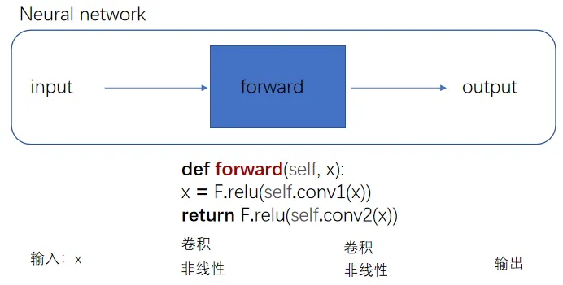
nn_module.py
import torch
from torch import nn
class Tudui(nn.Module):
def __init__(self):
super().__init__() ## 习惯性添加,调用了父类 `nn.Module` 的初始化方法,及时下面过程没有使用 `nn.Module` 的高级功能
def forward(self, input): ## 当你自定义一个模型，只要继承自 `nn.Module`，就必须定义一个名为 `forward(self, …)` 的方法，用来描述模型的前向传播逻辑
output = input + 1
return output
tudui = Tudui()
x = torch.tensor([1.0])
output = tudui(x)
print(output)
# 输出tensor([2.])PyTorch 默认的张量打印格式，表示其值为 2.0
1.1.2 Layers
1.1.2.1 Ⅰ 卷积层
卷积层中最常使用 Conv2d -- 因为图像为二维
卷积核的 「size」 一般是预定义好的
卷积核的 「weights」 一般是先初始化然后通过不断迭代学习而来的
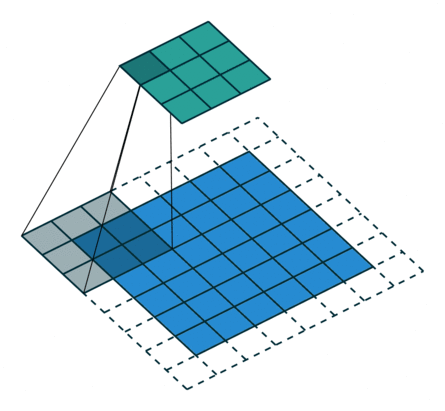
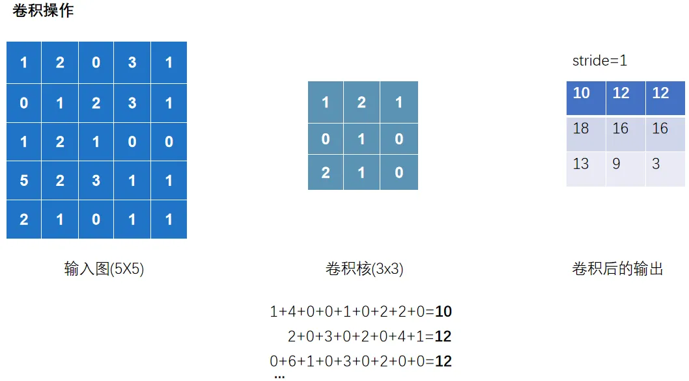
Original illustration unavailable: source image.
以上完整输出为:
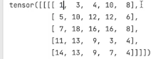
nn_conv.py

import torch
import torch.nn.functional as F
input =torch.tensor([[1,2,0,3,1],
[0,1,2,3,1],
[1,2,1,0,0],
[5,2,3,1,1],
[2,1,0,1,1]])
kernel = torch.tensor([[1,2,1],
[0,1,0],
[2,1,0]])
print(input.shape)
print(kernel.shape)
#以上输出torch.Size([5,5])和torch.Size([3,3]),不满足使用条件-> - reshape 是为了让数据 shape 满足 conv2d 的要求
# 01 看shape发现不满足,修改一下shape
input = torch.reshape(input,(1,1,5,5))
kernel = torch.reshape(kernel,(1,1,3,3))
## 02 卷积 conv2d
output = F.conv2d(input,kernel,stride=1) ## 这里的stride=1代表上下左右各移动一个像素(去扫描)
print(output)
output2 = F.conv2d(input,kernel,stride=2)
print(output2)
output3 = F.conv2d(input,kernel,stride=1,padding=1) ## padding=1代表上下左右填充1个像素
print(output3)
观察以下过程
输出 channel=2,代表有两个卷积核去扫描.并且两个卷积核数值是随机的
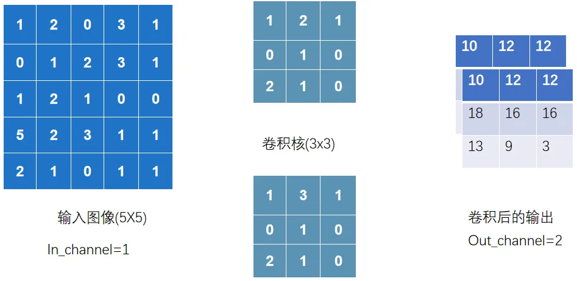
nn_conv2d.py
以下正式讲解卷积层的使用
import torch
import torchvision
from torch import nn
from torch.nn import Conv2d
from torch.utils.data import DataLoader
from torch.utils.tensorboard import SummaryWriter
from urllib3.filepost import writer
# 准备数据集
datset = torchvision.datasets.CIFAR10("data",
train=False, ## 训练数据集太大了,就用测试数据集
transform=torchvision.transforms.ToTensor(),
download=True)
# 加载数据集
dataloader = DataLoader(datset,batch_size=64)
# 自定义神经网络
class Tudui(nn.Module):
def __init__(self):
super().__init__()
## 创建conv1,表示你的第一个卷积层，并且后续可以在`forward`方法里直接用
self.conv1 = nn.Conv2d(in_channels=3,
out_channels=6,
kernel_size=3, ##卷积核大小
stride=1,
padding=0)
def forward(self,x):
x = self.conv1(x)
return x
# 初始化这个网络
tudui = Tudui()
## print(tudui)
writer = SummaryWriter("logs")
step = 0
for data in dataloader: ## `data` 只是一个变量名 它代表每次迭代从 `dataloader` 取出的那 1 批数据
imgs, targets = data
output = tudui(imgs)
# print(imgs.shape)
# print(output.shape)
writer.add_images("input",imgs,step) # 输入的torch.Size([64, 3, 32, 32]) 在卷积层中运行后 会输出 [64, 6, 30, 30] 有6通道;TensorBoard add_images 只支持 1 或 3 通道图片，不支持 6 通道
output = torch.reshape(output,(-1,3,30,30))
## `-1` 代表自动根据其他维度推算 batch 数量, 意思就是这个-1会经过reshape后自动计算成对应的数值.比如将以上[64, 6, 30, 30]的6压缩成两组3的话,就变成[128, 3, 30, 30]
writer.add_images("output",output,step) # 输出的torch.Size([128, 3, 30, 30])
step = step + 1
writer.close()
1.1.2.2 Ⅱ 池化层
池化层中最常使用 「MaxPool2d」
其一是对卷积层所提取的信息做更一步降维， 减少计算量 ，
其二是 加强图像特征的不变性 ，使之增加图像的偏移、旋转等方面的鲁棒性
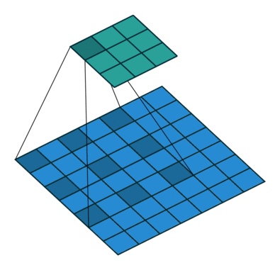
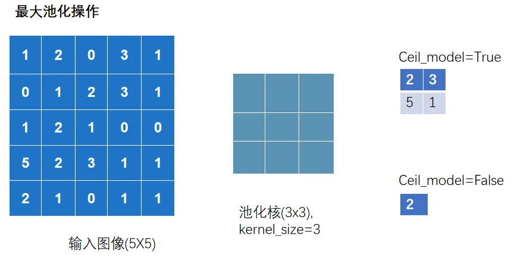
nn_maxpool.py
import torch
import torchvision
from torch import nn
from torch.utils.data import DataLoader
from torch.utils.tensorboard import SummaryWriter
# 01 测试最大池化的实现
# input =torch.tensor([ [1,2,0,3,1],
# [0,1,2,3,1],
# [1,2,1,0,0],
# [5,2,3,1,1],
# [2,1,0,1,1] ],
# dtype=torch.float32)
## 这是因为池化操作在底层实现时，用的都是浮点计算
# input = torch.reshape(input,(-1,1,5,5))
# print(input.shape)
##输出torch.Size([1,1,5,5])
#
# class Tudui(nn.Module):
# def __init__(self):
# super().__init__()
# self.maxpool1 = nn.MaxPool2d(kernel_size=3,ceil_mode=True)
#
# def forward(self, input):
# output = self.maxpool1(input)
# return output
#
# tudui = Tudui()
# output = tudui(input)
# print(output)
# 02 针对数据集测试
dataset = torchvision.datasets.CIFAR10(root='./data',
train=False,
transform=torchvision.transforms.ToTensor(),
download=True)
dataloader = DataLoader(dataset,batch_size=64)
class Tudui(nn.Module):
def __init__(self):
super().__init__()
self.maxpool1 = nn.MaxPool2d(kernel_size=3,ceil_mode=False)
def forward(self, input):
output = self.maxpool1(input)
return output
tudui = Tudui()
writer = SummaryWriter("logs")
step = 0
for data in dataloader:
imgs, targets = data
writer.add_images("input",imgs,step)
output = tudui(imgs)
writer.add_images("output",output,step)
step = step + 1
writer.close()
1.1.2.3 Ⅲ 激活层
激活层一般采用 「非线性激活」 ，神经网络中引入非线性的特质，才能训练出符合各种特征的模型
非线性激活函数有很多，如比较常见 「ReLU」 和 「Sigmoid」
nn_relu.py
import torch
import torchvision
from torch import nn
from torch.nn import ReLU
from torch.utils.data import DataLoader
from torch.utils.tensorboard import SummaryWriter
from nn_conv2d import dataloader
# # 01 测试ReLU
# input = torch.tensor([[1,-0.5],
# [-1,3]])
# output = torch.reshape(input,(-1,1,2,2))
## 输出( [[[[1, -0.5],
## [-1, 3]]]] )
## 如果仅仅在此测试Relu中,可以不需要reshape,但在Conv2d这样的情况下就需要
# print(output.shape)
## 输出(1,1,2,2)
# class Tudui(nn.Module):
# def __init__(self):
# super().__init__()
# self.relu1 = nn.ReLU()
# def forward(self, input):
# output = self.relu1(input)
# return output
# tudui = Tudui()
# output = tudui(input)
# print(output)
## 输出( [[[[1.,0.],
## [0., 3.]]]] )
# 02 Sigmoid
dataset = torchvision.datasets.CIFAR10(root='./data',
train=False,
transform=torchvision.transforms.ToTensor(),
download=True)
dataloader = DataLoader(dataset,batch_size=64)
class Tudui(nn.Module):
def __init__(self):
super().__init__()
self.sigmoid1 = nn.Sigmoid()
def forward(self, input):
output = self.sigmoid1(input)
return output
tudui = Tudui()
writer = SummaryWriter("logs")
step = 0
for data in dataloader:
imgs, targets = data
writer.add_images("input",imgs,step)
output = tudui(imgs)
writer.add_images("output",output,step)
step += 1
writer.close()
对于 Relu(input,inplace=True/False)
True 代表替换原来的变量
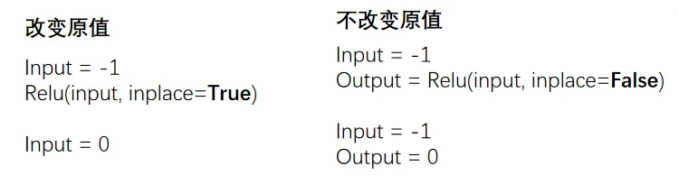
1.1.2.4 Ⅳ 其他层
「Transformer Layers」 特定的网络结构
「Sparse Layers」 特定的网络结构，其中的 Embedding 用于自然语言处理
「Linear Layers」 用的较多，即 全连接层
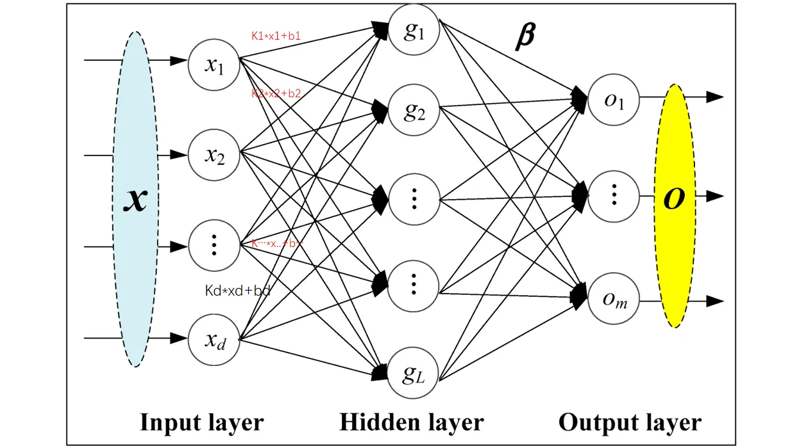
nn_linear.py
import torch
import torchvision
from torch import nn
from torch.nn import Linear
from torch.utils.data import DataLoader
dataset = torchvision.datasets.CIFAR10("./data",
train=False,
transform=torchvision.transforms.ToTensor(),
download=True)
dataloader = DataLoader(dataset, batch_size=64)
class Tudui(nn.Module):
def __init__(self):
super().__init__()
self.linear1 = Linear(196608, 10)
def forward(self, input):
output = self.linear1(input)
return output
tudui = Tudui()
for data in dataloader:
imgs, targets = data
print(imgs.shape) # torch.Size([64, 3, 32, 32])
# flatten 展平成一行 类似于reshape(1,1,1,-1),但是维度不一样哦
# 注意, torch.flatten和下面代码中的nn.Flatten()不一样
output = torch.flatten(imgs)
print(output.shape) # torch.Size([196608]) 注意:变成一维的了
output = tudui(output)
print(output.shape)
## 输出torch.Size([10])
注意点:
torch.flatten(imgs)，它直接把所有图片合成了一个一维向量，丢掉了 batch 信息。模型只能输出 `torch.Size([10])
nn.Flatten()，只展平单张图片，不会丢失 batch，所以每一张图片都能独立得到 10 维预测，输出就是torch.Size([64,10])
1.1.3 Sequential
Sequential 主要是方便代码的编写，使代码更加简洁
根据下图搭建神经网络：判断一个图的类别（最后输出为十个类别，最后进行判断）
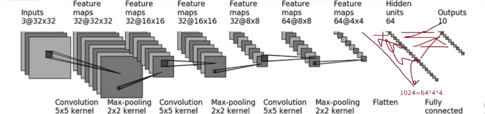
nn_seq.py
未使用 sequential
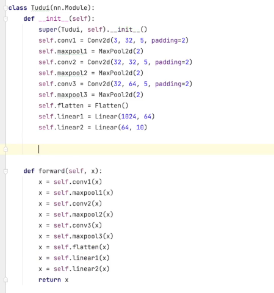
使用 sequential 统一管理中间层
import torch
from torch import nn
from torch.nn import Conv2d, MaxPool2d, Flatten, Linear, Sequential
from torch.utils.tensorboard import SummaryWriter
class Tudui(nn.Module):
def __init__(self):
super(Tudui, self).__init__()
self.model1 = Sequential(
Conv2d(3, 32, 5, padding=2),##对照以上那个图
MaxPool2d(2), ##池化
Conv2d(32, 32, 5, padding=2),
MaxPool2d(2),
Conv2d(32, 64, 5, padding=2),
MaxPool2d(2),
Flatten(), ## 展平成一维
Linear(1024, 64),
Linear(64, 10)
)
def forward(self, x):
x = self.model1(x)
return x
tudui = Tudui()
print(tudui)
# 检查网络
input = torch.ones((64, 3, 32, 32))
output = tudui(input)
print(output.shape) ## 输出 torch.Size([64,10])
# tensorboard中的add_graph 查看神经网络的流程图
writer = SummaryWriter("logs")
writer.add_graph(tudui, input)
writer.close()
1.2 损失&优化
1.2.1 损失函数
损失函数（Loss Function）用于衡量模型的「预测输出」与「实际标签」之间的差异或者误差
损失越小越好，根据 loss 调整参数，以减小损失
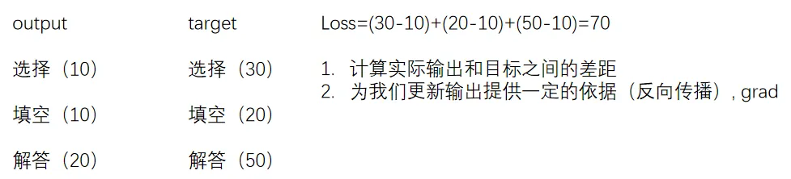
# 计算output和target之差的「绝对值」
nn.L1Loss()
# 计算output和target之差的「均方差」
nn.MSELoss()
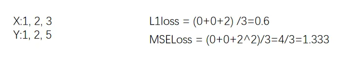
# 交叉熵损失函数（Cross-Entropy Loss Function）是在分类问题中经常使用的一种损失函数
# 当分类预测正确时，损失要比较小，即\`-x[class]\`相比右边的项应较大
nn.CrossEntropyLoss()
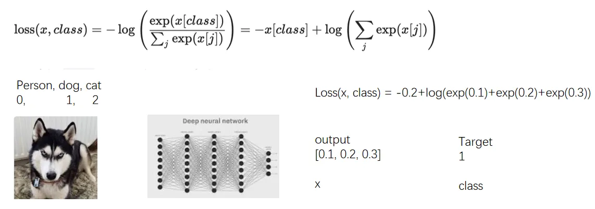
nn_loss.py
import torch
from torch.nn import L1Loss
from torch import nn
inputs = torch.tensor([1, 2, 3], dtype=torch.float32)
targets = torch.tensor([1, 2, 5], dtype=torch.float32)
inputs = torch.reshape(inputs, (1, 1, 1, 3))
targets = torch.reshape(targets, (1, 1, 1, 3))
# 01 L1Loss
loss = L1Loss(reduction='sum') # mean or sum 选择计算方式
result = loss(inputs, targets)
print(result)
# 02 MSELoss
loss_mse = nn.MSELoss()
result_mse = loss_mse(inputs, targets)
print(result_mse)
# 03 CrossEntropyLoss
x = torch.tensor([0.1, 0.2, 0.3])
y = torch.tensor([1])
x = torch.reshape(x, (1, 3))
##`CrossEntropyLoss` 期望 x 的形状是 (1, 3)（一个样本，三个类别），y 的形状是 (1,)
## 必须将 x 的形状由 (3,) 变为 (1, 3)
loss_cross = nn.CrossEntropyLoss()
result_cross = loss_cross(x, y)
print(result_cross)
1.2.2 反向传播
前向传播：将训练集数据输入到 NN 的「输入层」，经过「隐藏层」，最后到达「输出层」并输出结果
反向传播：计算估计值与实际值之间的误差，并将误差从「输出层」向「隐藏层」反向传播，直至「输入层」
nn_loss_network.py
import torchvision
from torch import nn
from torch.nn import Sequential, Conv2d, MaxPool2d, Flatten, Linear
from torch.utils.data import DataLoader
dataset = torchvision.datasets.CIFAR10("./data",
train=False,
transform=torchvision.transforms.ToTensor(),
download=True)
dataloader = DataLoader(dataset, batch_size=1)
class Tudui(nn.Module):
def __init__(self):
super(Tudui, self).__init__()
self.model1 = Sequential(
Conv2d(3, 32, 5, padding=2),
MaxPool2d(2),
Conv2d(32, 32, 5, padding=2),
MaxPool2d(2),
Conv2d(32, 64, 5, padding=2),
MaxPool2d(2),
Flatten(),
Linear(1024, 64),
Linear(64, 10)
)
def forward(self, x):
x = self.model1(x)
return x
loss = nn.CrossEntropyLoss()
tudui = Tudui()
for data in dataloader:
imgs, targets = data
outputs = tudui(imgs)
result_loss = loss(outputs, targets)
# 反向传播 计算梯度
result_loss.backward()
print("ok")
1.2.3 优化器
更新参数 减少损失
反向传播（backward）–> 计算出梯度（grad）–> 根据梯度和学习率更新参数 –> 减小 loss
优化器的种类比较多，常用的就是 SGD（随机梯度下降）
不同优化器的参数列表不同，一般设置「parameters」和 l「lr」这两个参数，其他默认
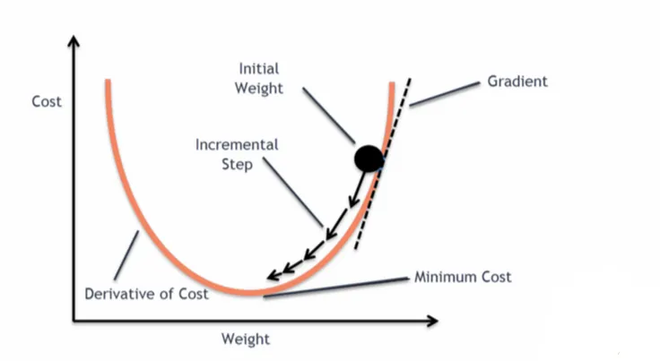
nn_optim.py
import torch
import torchvision
from torch import nn
from torch.nn import Sequential, Conv2d, MaxPool2d, Flatten, Linear
from torch.optim.lr_scheduler import StepLR
from torch.utils.data import DataLoader
dataset = torchvision.datasets.CIFAR10("./data",
train=False,
transform=torchvision.transforms.ToTensor(),
download=True)
dataloader = DataLoader(dataset, batch_size=1)
class Tudui(nn.Module):
def __init__(self):
super(Tudui, self).__init__()
self.model1 = Sequential(
Conv2d(3, 32, 5, padding=2),
MaxPool2d(2),
Conv2d(32, 32, 5, padding=2),
MaxPool2d(2),
Conv2d(32, 64, 5, padding=2),
MaxPool2d(2),
Flatten(),
Linear(1024, 64),
Linear(64, 10)
)
def forward(self, x):
x = self.model1(x)
return x
loss = nn.CrossEntropyLoss()
tudui = Tudui()
# 优化器 SGD（随机梯度下降）
optim = torch.optim.SGD(tudui.parameters(), lr=0.01) ## lr学习率，太大不稳定，太小收敛慢
##tudui.parameters() 的作用：这个方法会自动遍历 `Tudui` 网络中所有子模块（比如 `Conv2d` 和 `Linear` 层），收集这些层的所有可训练参数，返回到torch.optim.SGD
for epoch in range(20): ## 进行多轮学习
running_loss = 0.0
for data in dataloader:
imgs, targets = data
outputs = tudui(imgs)
result_loss = loss(outputs, targets)
optim.zero_grad() # 把上一步的梯度清零，否则会累加
result_loss.backward()
optim.step() # 对weight参数进行更新
running_loss = running_loss + result_loss
print(running_loss)